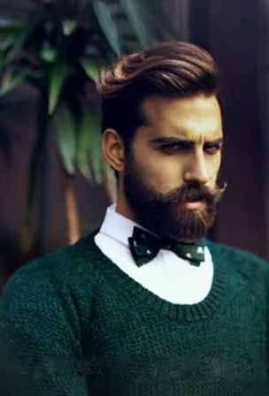

First, let's get to know the different types of bow ties: Self-tied, pre-tied, and clip-on. Ignore types two and three immediately. If you're the type of person who wants to wear a bow tie, you should be the type of person that wants to learn how to tie one. There are literally 100,000 videos to choose from.
The key to wearing a bow tie is to do it sparingly (unless you're trying to make it your "thing" like a certain Supreme Court Justice). Make it about a special event, and keep the rest of your outfit muted — think a solid color suit and shirt.
For a suits, go with navy, black or grey, and for shirts, stick to blues and whites. It's possible to wear a pinstripe suit with a bow tie, but make sure the stripe is subtle. And make sure the suit and shirt match, since they'll be more visible than they would be with a regular necktie, which bisects the male torso. Most important is the bow tie itself. Since the rest of your outfit will be conservative, this is the time to make a statement. A basic place to start is with some stripes, but once you're comfortable with patterns, start experimenting with polka dots, paisley, or anything else. A bow tie is such a small piece of clothing that it's acceptable for it to get loud. You wanted to stand out by wearing one, so embrace it.
Once you've tied your bow tie and you're happy that it's not going to come undone, leave it alone. It's part of the fun that the knot won't be perfect; that's how people will know you did it yourself. Remember, bow ties don't look nearly as cool loosened like regular ties, so keep it tight. Don't touch it again until you're ready to untie it completely for that rakish (cool) end-of-a-great-night look you've been waiting for.